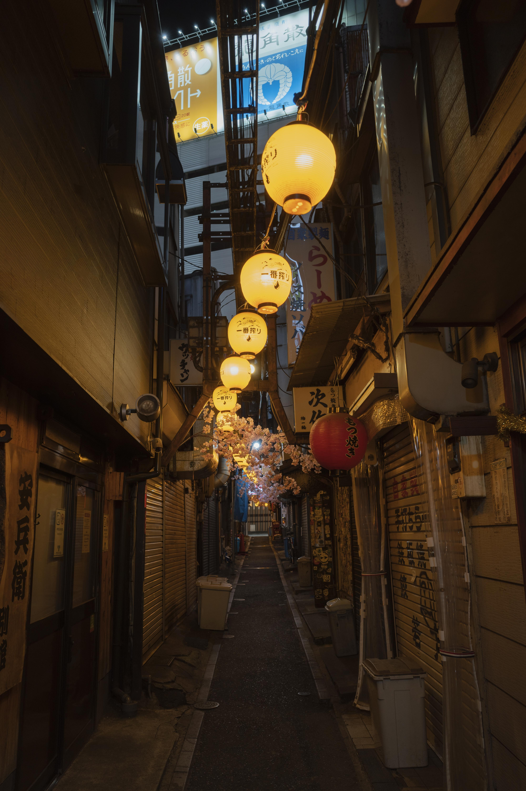
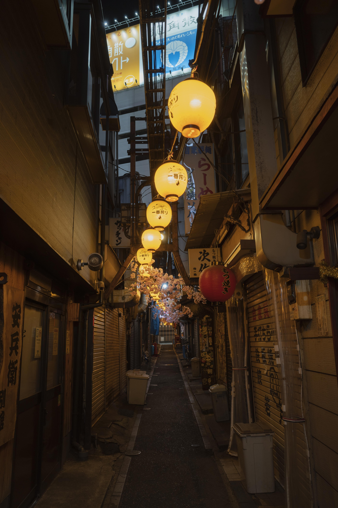

Dive into the heart of Japan’s vibrant capital! Explore the historic Meiji Shrine, experience the buzz of Shibuya Crossing,
and shop in Harajuku’s trendy streets. Enjoy authentic sushi at Tsukiji Outer Market and take in stunning city views from Tokyo Tower.
End the trip with a day at Tokyo Disneyland or teamLab Borderless for unforgettable memories.
Step back in time in Kyoto’s serene beauty. Wander through the iconic Fushimi Inari Shrine’s red torii gates, visit the golden Kinkaku-ji Temple,
and stroll the charming streets of Gion, hoping to spot a geisha. Enjoy a traditional tea ceremony and relax in the peaceful Arashiyama Bamboo Grove.
 

Get closer to nature in Japan’s northern wonderland. Start with Sapporo’s lively markets and famous miso ramen, then soak in a hot spring at Noboribetsu.
Marvel at the scenic beauty of Furano’s flower fields and take a boat ride on the crystal-clear Lake Shikotsu. Perfect for outdoor lovers!